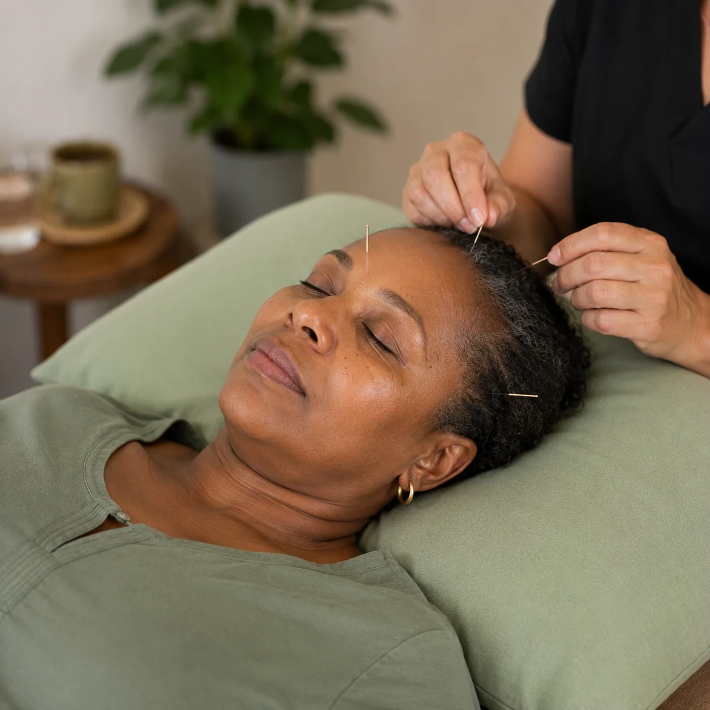

High Blood Pressure · Diabetes · Stroke Recovery · Bell's Palsy · Fatigue
Whole-person support alongside your medical care
Living with a chronic health condition means living with ongoing management — medication, appointments, monitoring, lifestyle adjustments. It can become the background noise of your life, and with it often comes a particular kind of fatigue that goes beyond the physical.
Acupuncture does not replace your medical team or your prescribed treatment. But for many people with chronic conditions, it offers something their medical care alone doesn't always reach — attention to the whole person, support for stress and sleep, help with pain and inflammation, and a space to genuinely settle.
Traditional Chinese Medicine has a long history of use alongside conditions like diabetes, hypertension, and neurological conditions. Shaul brings careful, experienced attention to each of these areas, always working in partnership with your existing care.
Ask about Chronic Condition Support
Conditions we support
- High blood pressure — stress reduction, nervous system support, circulation
- Diabetes — neuropathy management, fatigue, overall wellbeing
- Stroke recovery — alongside rehabilitation, mobility and nervous system support
- Bell's Palsy — acupuncture has a strong tradition of use in facial nerve recovery
- Chronic fatigue — energy restoration and immune support
- Digestive conditions — IBS, bloating, constipation, reflux
- Respiratory conditions — asthma, sinusitis, recurrent illness
- Autoimmune support — general regulation and wellbeing
- Weight management support — appetite regulation, stress eating, metabolism
Bell's Palsy & Stroke Recovery
These two conditions respond particularly well to acupuncture. For Bell's Palsy — sudden facial paralysis or weakness caused by nerve inflammation — early acupuncture intervention can be very beneficial in supporting nerve recovery and reducing the duration of symptoms. For stroke recovery, acupuncture is used as a complementary support to rehabilitation, helping with muscle tone, sensation, circulation, and emotional processing during a challenging recovery journey. Shaul has experience with both conditions and approaches them with patience and genuine care.
"After my stroke I was struggling with weakness on my left side and terrible fatigue. My physiotherapist suggested I try acupuncture alongside my rehab. Shaul was extraordinary — steady, knowledgeable and deeply kind. It made a real difference to my recovery and to how I felt emotionally during that time."
— David Petersen, RondeboschReady to Book?
Acupuncture in Lansdowne, Cape Town
People in pain don't need a scavenger hunt. Here's everything you need.